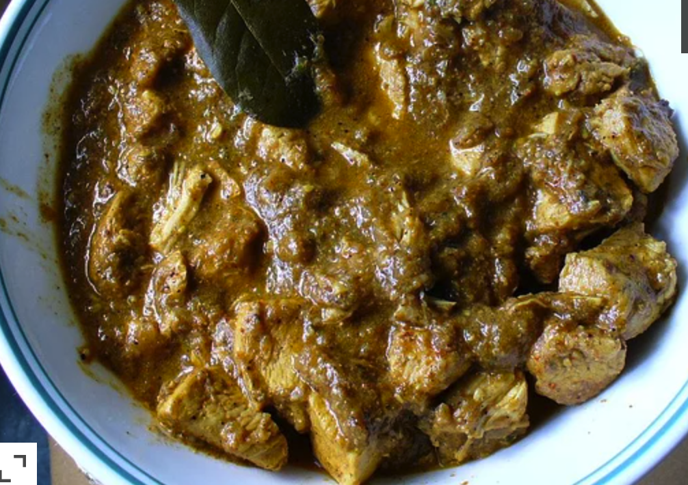

Spicy Chicken Curry

Description:
Garam Masala, similar but NOT identical to curry powder, can be found in East Indian food shops and sometimes in
the
'Ethnic Foods' section at the supermarket. Serve hot with fried bread or rice, if desired
Ingredients:
-
1 pound skinless, boneless chicken breast halves, cut into bite size pieces
-
2 onions, chopped
-
4 green chile peppers, chopped
-
4 tablespoons vegetable oil
-
2 tablespoons ginger garlic paste
-
1 tablespoon poppy seeds
-
2 tablespoons chili powder
-
2 cups water
-
1 tablespoon garam masala
-
1 pinch ground turmeric
-
salt to taste
Steps:
- Rinse chicken pieces and pat dry. Set aside. Grind poppy seeds into a paste.
- In a large skillet, saute onions and green chiles in oil until golden brown. Add ginger garlic paste and
continue to
saute. Add poppy seed paste and reserved chicken pieces, continuing to saute. Stir all together; after
chicken is well
mixed with the 'gravy', add the red chili powder and pour 2 cups of water over the mixture. Cover skillet
and let simmer
about 12 to 15 minutes, until chicken is cooked through.
- After chicken is 'well-boiled' (the oil should be floating on top of the skillet liquid), add the garam
masala and
turmeric powder and turn off the stove. Stir all together and serve.
Source
Go to home page